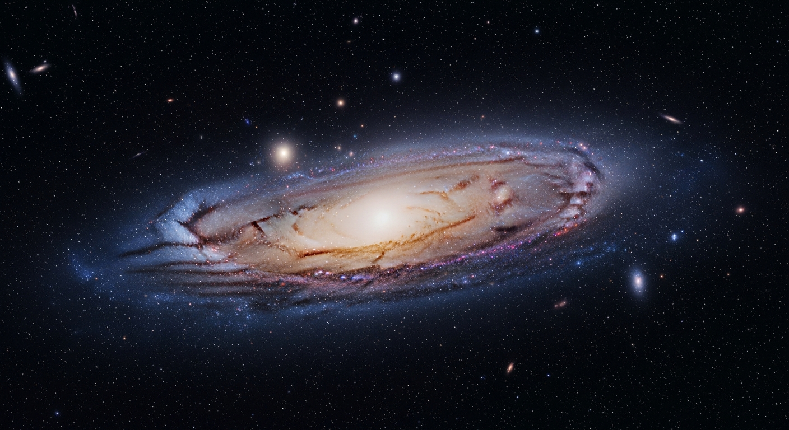
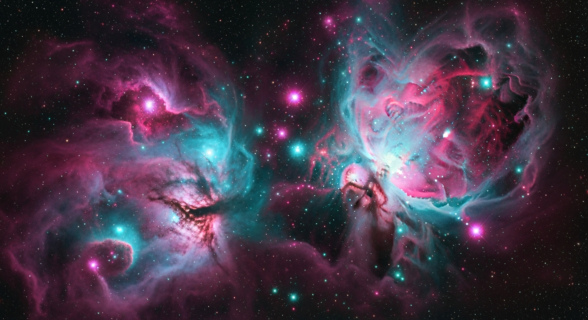

A Journey Through the
Milky Way
Look at the edge of the Orion Arm and look out into the vastness. A barred spiral galaxy containing hundreds of billions of planets and stars, and our home in the cosmos.
Scroll to explore
100,000
Light Years
Diameter
13.6
Billion Years
Age
200–400
Billion
Stars
26,000
LY from Center
Our Position

Stellar Nurseries
Scattered across the spiral arms are vast clouds of interstellar dust and gas — nebulae. These are the crucibles where new stars are born. Gravity compresses the gas until nuclear fusion ignites, lighting up the cloud from within in brilliant hues of magenta, cyan, and gold.
Our Local Neighborhood
Tucked away in the Orion Arm, an unassuming yellow dwarf star holds a system of eight planets in its gravitational embrace.